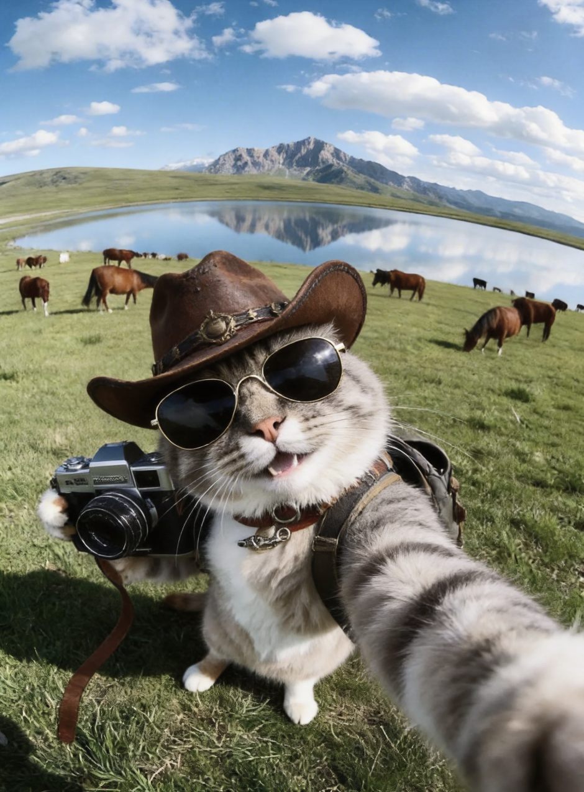
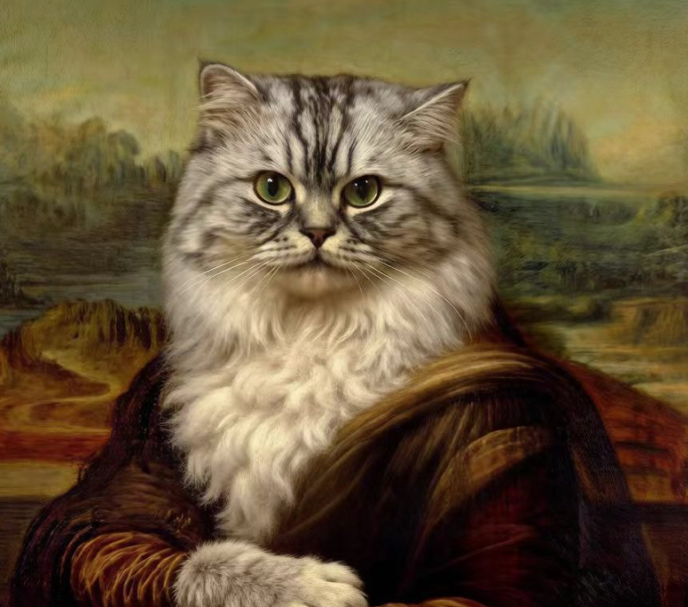
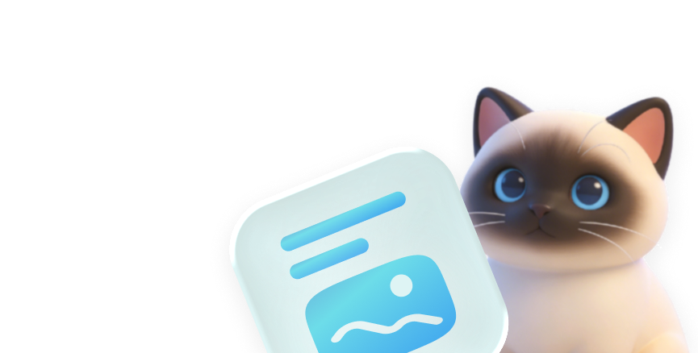

理解宠物外形、性格、擅长场景
AI NATIVE DEMO
FROM PET TO PERSONAL BRAND
不是多一个 AI 工具，
是多一个懂你宠物的内容搭档。
Petty 读取宠物画像、历史内容与平台目标，把“今天发什么”变成一条可解释、可编辑、可持续成长的创作任务。
规划任务根据目标生成今日内容
共创并学习人工确认，反馈沉淀画像
可操作演示
从手机首页点击「开始今日任务」，体验完整 AI 共创闭环。
AI 边界
只生成建议与草稿，不自动发布；用户始终拥有编辑权与最终决定权。
下午好，花卷妈妈
今天也让花卷
被更多人看见吧！

PETTY · 今日策略秋日松弛感增长任务
12 min花卷的「户外探索家」内容互动率最高。今天建议用旅行自拍强化记忆点。
为什么推荐近 3 条户外内容平均收藏 +26%
成长面板
Lv.6新锐萌宠
本周已完成 4 / 6 个任务
再完成 2 个任务，解锁「稳定更新者」
灵感速递
为花卷筛选
热点模板如果猫咪也有名画
一键创作把日常变成故事PETTY WORKSPACE
今日共创任务
01
本次目标强化「户外探索家」人设
生成一篇适合小红书的秋日旅行图文，突出花卷勇敢、好奇又有点搞笑的性格。
✦
Petty 将使用这些上下文宠物画像 · 过往高互动内容 · 当前平台语气 · 本次任务目标
预计 8 秒 · 结果可编辑，不会自动发布
✦
Petty 正在为花卷策划…
- 理解宠物画像
- 匹配平台热门结构
- 组合图片与文案
推荐封面 · 4:5
✦ AI 草稿基于花卷画像生成
老板说去看草原，没说我要自己当摄影师📷
第一次来到这么大的草原，花卷全程都在认真巡逻。直到发现镜头里的自己——嗯，今天也是很会营业的小猫咪。你家毛孩子旅行时是什么风格？
为什么这样生成？
使用「反差开场 + 场景故事 + 互动提问」结构；保留花卷的探索家人设，同时避免过度拟人和虚假经历。
EXPLORE
灵感广场
本周趋势带毛孩子
带毛孩子
去看更大的世界
宠物日记让角色感更稳定
GROWTH
成长与合作
人设辨识度 88更新稳定性 76互动潜力 83
Petty 的增长建议
每周更新固定「旅行自拍」栏目
连续发布 3 期，建立花卷的核心视觉记忆。
提高评论区互动
用开放式提问代替单向描述，预计互动率提升 12–18%。
合作机会
模拟数据PET
TRIP
TRIP
品牌邀约 · 旅行用品「和宠物一起出发」内容征集
匹配度 91% · 10 月 12 日截止
花卷的数字画像
户外探索家
勇敢 · 好奇 · 反差萌
78%画像完整度
每一次采用、编辑或放弃，都会帮助 Petty 更懂花卷。
Petty 已学到
银渐层、圆脸、旅行装备来自 24 张已授权照片
好奇但慢热，镜头前有反差感来自问卷与 8 次创作反馈
户外内容收藏率最高来自历史内容汇总
🔒
你的数据由你控制
演示版仅使用本地模拟数据，不上传、不存储任何账号信息。
任务完成，花卷画像已更新 ✦
无需登录 · 本地模拟数据 · 建议使用手机体验